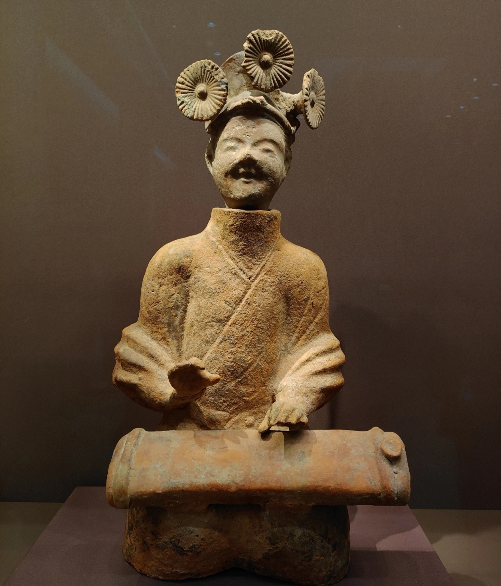
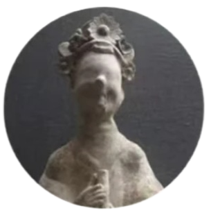
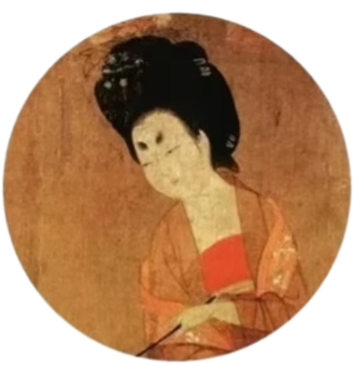
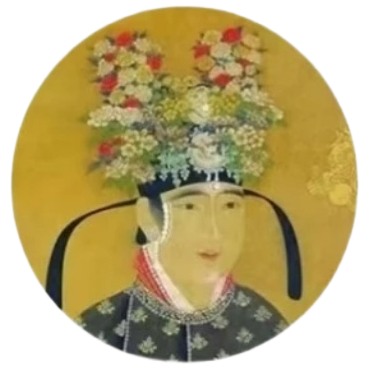
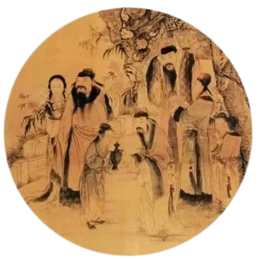
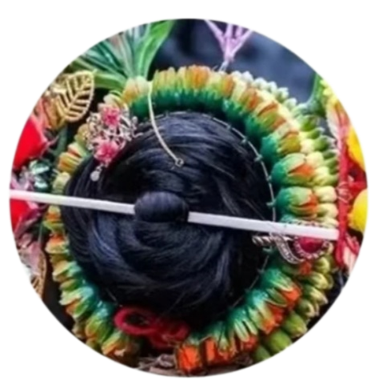
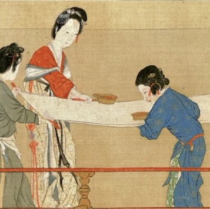
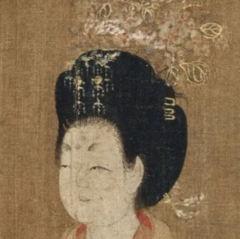
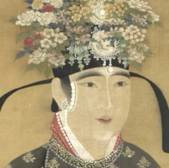
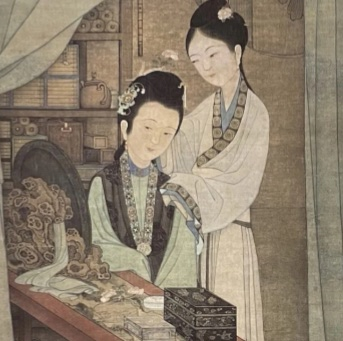

早在汉代，簪花的形态初现端倪。彼时礼乐文化兴盛，花草天然的美感被古人发掘，鲜花开始以简单的方式佩戴在发髻之上，成为民间兴起的装饰习俗。《南越行纪》中便记载了以彩丝串花作为头饰的风尚，素馨、茉莉都是当时广受喜爱的簪戴花材。虽然此时的簪花尚未形成规范完整的艺术形式，花材选择、佩戴方式都较为朴素随性，但已经走出祭祀礼仪的范畴，走入百姓日常。随着时代流转，簪花习俗慢慢在华夏大地传续演变。人们将四时鲜花簪于发间，借花木芬芳寄托情思：春日簪桃李，夏日簪茉莉，以鲜花呼应时节；节庆之时簪花祈福，期盼顺遂安康。这份对花草的喜爱代代延续，为后来魏晋至唐宋簪花风尚的盛行埋下伏笔，也让簪花慢慢沉淀出独属于东方的审美内涵，它不只是装点容貌的饰物，更寄托着人们对美好生活的向往与祈福的寓意。

东汉·陶抚琴俑《南越行纪》记载，当时已有用彩丝穿花制作首饰的习俗，素馨、茉莉是常用簪戴花材。

魏晋南北朝到唐代：簪花逐渐流行，男女皆有簪花习惯；到唐代，上至皇室贵族、下至平民百姓都喜爱簪花，簪花样式、花材不断丰富，慢慢形成相关礼仪体系。

簪花习俗发展至鼎盛，男子簪花十分普遍；朝廷完善簪花制度，皇帝会赐花给臣子，不同品级官员佩戴的花，在种类、材质、颜色上都有明确制。

簪花不再像宋代那样全行，在部分阶层、节庆典礼中保留；伴随妆造技术发展，花和发型妆容融合，成为整体形象的一部分。

簪花习俗在部分场景留，多用于婚嫁头饰、民俗节庆、戏曲扮；材料展有鲜花、绢花等品类，蟳埔簪花围就是延续至今的典型代表。


簪花习俗初步形成，多使用四季鲜花，尚无严格等级区分。

簪花艺术达到鼎盛，形成完整体系，成为社会各阶层流行的装饰。

簪花习俗更加普及，人工制作的绢花、罗花开始流行。

簪花技艺更加精进，材料更加丰富，形成了各地特色。